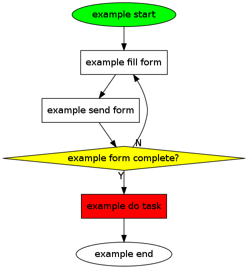
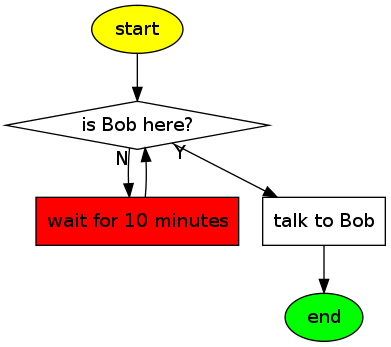

Org tutorial on generating simple process diagrams using dot and tables
Table of Contents
{Worg’s index} > {Org-tutorials}
Introduction
This tutorial summarizes one specific method which defines (process) elements within tables in order to generate a simple work flow diagram using dot.
An alternative way of accomplishing the task would be using PlantUML (a wrapper to Graphviz) which can be integrated to Emacs as well.
We first demonstrate a compact version for one-time usage (tables and code snippet). Then, we show how to re-use this method for multiple sets of tables in an efficient way.
Defining the Process Elements
We are using tables to define our work-flow. The first table holds the node identifiers (internal names), node labels, optional shape definitions, and optional fill colors:
#+name: example-node-table | *node* | *label* | *shape* | *fillcolor* | |------------+----------------+---------+-------------| | S_start | start | ellipse | green | | S_fill | fill form | | | | S_send | send form | | | | S_complete | form complete? | diamond | yellow | | S_do | do task | | red | | S_end | end | ellipse | |
The second table contains information about connections between nodes (using node identifiers) and optional labels:
#+name: example-graph | from | to | label | |------------+------------+-------| | S_start | S_fill | | | S_fill | S_send | | | S_send | S_complete | | | S_complete | S_fill | N | | S_complete | S_do | Y | | S_do | S_end | |
ELISP code snippet for generating the diagram using dot
In the next step, we are going to generate the diagram file (in PNG format) using dot. You should make sure that you have a working dot installation and probably tried out a tutorial about using dot within Org-mode.
The author of this code is Rick Frankel. It is written in Emacs LISP which directly executes the generated dot script:
#+name: graph-from-tables
#+HEADER: :var nodes=example-node-table graph=example-graph
#+BEGIN_SRC emacs-lisp :file ~/example-diagram.png :colnames yes :exports results
(org-babel-execute:dot
(concat
"digraph {\n"
"//rankdir=LR;\n" ;; remove comment characters '//' for horizontal layout; add for vertical layout
(mapconcat
(lambda (x)
(format "%s [label=\"%s\" shape=%s style=\"filled\" fillcolor=\"%s\"]"
(car x)
(nth 1 x)
(if (string= "" (nth 2 x)) "box" (nth 2 x))
(if (string= "" (nth 3 x)) "none" (nth 3 x))
)) nodes "\n")
"\n"
(mapconcat
(lambda (x)
(format "%s -> %s [taillabel=\"%s\"]"
(car x) (nth 1 x) (nth 2 x))) graph "\n")
"}\n") params)
#+END_SRC
As you can see, the node table and the graph table are being defined
in the header using the :var argument for babel. The resulting PNG
file name is defined as :file argument below.
By executing the babel script (e.g., C-c C-c) the PNG file gets
created.
You can remove the dot-comment (//) in front of rankdir in order
to switch to a horizontal layout of the diagram.

Re-using the code snippet with call-statements
When you are generating multiple diagrams within one single Org-mode file, you might want to re-use the ELISP code for all of your diagrams. However, you want to use different definition tables and a different output file name. The ELISP code is the same for all of them.
This can be achieved by using the call command. In this example, we
are re-using the ELISP code from above with two newly created tables
of the very important process 42 (please notice also the differences
in the name arguments of the tables):
#+name: process42-node-table | *node* | *label* | *shape* | *fillcolor* | |---------+---------------------+---------+-------------| | mystart | start | ellipse | yellow | | mywatch | is Bob here? | diamond | | | mywait | wait for 10 minutes | | red | | mytalk | talk to Bob | | | | myend | end | ellipse | green |
The second table contains information about connections between nodes (using node identifiers) and optional labels:
#+name: process42-graph | from | to | label | |---------+---------+-------| | mystart | mywatch | | | mywatch | mywait | N | | mywait | mywatch | | | mywatch | mytalk | Y | | mytalk | myend | |
The call statement consists of the name of the code
(graph-from-tables), an insider header argument for the new file
name, and arguments which defines the input tables. For technical
reasons, we have to add table ranges as well ([2:-1]):
#+call: graph-from-tables[:file ~/diagram-process42.png](nodes=process42-node-table[2:-1],graph=process42-graph[2:-1]) :results file
By invoking the call statement (place the cursor on it and use the
usual C-c C-c command to execute), you generate the diagram for our
process 42:

That’s it.
Pretty handy for generating (simple) process diagrams.